预备知识：django的CBV和FBV
CBV(class based view)：多用，简单回顾一下
FBV(function based view)：
CBV模式的简单操作：来个登陆页面吧
login.html文件内容如下：
<!DOCTYPE html>
<html lang="en">
<head>
<meta charset="UTF-8">
<title>Title</title>
</head>
<body>
<form action="{% url 'login' %}" method="post">
{% csrf_token %}
用户名: <input type="text" name="username">
密码: <input type="text" name="password">
<input type="submit">
</form>
</body>
</html>url.py内容如下
from django.conf.urls import url
from django.contrib import admin
from app01 import views
urlpatterns = [
url(r'^admin/', admin.site.urls),
url(r'^login/', views.LoginView.as_view(),name='login'),
]views.py
from django.shortcuts import render,HttpResponse,redirect
# Create your views here.
from django.views import View
class LoginView(View):
def get(self,request):
return render(request,'login.html')
def post(self,request):
return HttpResponse('post')大家还记得CBV的这个视图函数，为什么get请求就能找到类的get方法，post请求就能找到post方法，其内部有个dispatch方法来进行分发，这又怎么玩呢，看源码啦，从哪里看呢？那里先执行，就从哪里看
views.LoginView.as_view()这个东西是不是先执行啊，url接收到请求，调用了它对不对，as_view()类方法，这个类方法给你返回了一个叫view的方法，就是说这个url对应这个一个view方法，当用户访问login页面的时候是不是就是执行了view(request)，大家进去看看源码吧。
然后你就可以玩dispatch方法了，看代码：
from django.shortcuts import render,HttpResponse,redirect
# Create your views here.
from django.views import View
class LoginView(View):
def dispatch(self, request, *args, **kwargs):
print('something...')
res = super().dispatch(request, *args, **kwargs) #注意，不用传self，为什么呢，因为super已经帮你吧self放进去啦
print('someting....')
return res
def get(self,request):
return render(request,'login.html')
def post(self,request):
return HttpResponse('post')为什么要说它呢，因为后面咱们的drf学习，就要用它啦。
摘自：http://www.ruanyifeng.com/blog/2014/05/restful_api.html
1. 什么是RESTFUl
RESTful 是目前最流行的 API 设计规范，用于 Web 数据接口的设计。
REST与技术无关，代表的是一种软件架构风格，REST是Representational State Transfer的简称，中文翻译为“表征状态转移”
REST从资源的角度类审视整个网络，它将分布在网络中某个节点的资源通过URL进行标识，客户端应用通过URL来获取资源的表征，获得这些表征致使这些应用转变状态
所有的数据，不过是通过网络获取的还是操作（增删改查）的数据，都是资源，将一切数据视为资源是REST区别与其他架构风格的最本质属性
对于REST这种面向资源的架构风格，有人提出一种全新的结构理念，即：面向资源架构（ROA：Resource Oriented Architecture）
另外还有其他两种，简单了解。
远程过程调用（RPC）
远程过程调用为 Web 服务提供一个分布式函数/方法接口供用户调用。这是一种较传统的方式。通常，在 WSDL 中对 RPC 接口进行定义（类似于早期的XML-RPC）。本质上，RPC 方式利用一个简单映射，把用户请求直接转化成一个特定语言编写的函数/方法。现在，该方式已不再使用。
面向服务架构（SOA）
面向服务架构现在，业界比较关注的是遵从面向服务架构（Service-oriented architecture，SOA）来构建 Web 服务。该方式中，通讯是由消息驱动，而不再是某个动作（方法调用）。这种 Web 服务也称为“面向消息的服务”。网络应用程序，分为前端和后端两个部分。当前的发展趋势，就是前端设备层出不穷（手机、平板、桌面电脑、其他专用设备......）。
因此，必须有一种统一的机制，方便不同的前端设备与后端进行通信。这导致API构架的流行，甚至出现"API First"的设计思想。RESTful API是目前比较成熟的一套互联网应用程序的API设计理论。还有一篇《理解RESTful架构》，探讨如何理解这个概念。
表征状态转移大概图解：
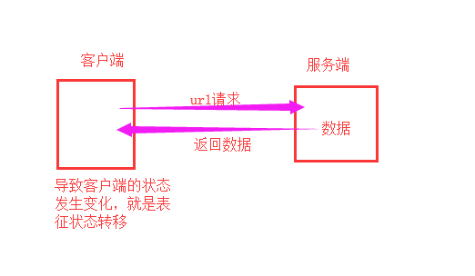
2.RESTFUl API设计
2.1 使用协议
API与用户的通信协议，总是使用HTTPs协议。
2.2 使用域名
应该尽量将API部署在专用域名之下，意思就是给API专门做一个服务器。
https://api.example.com如果确定API很简单，不会有进一步扩展，可以考虑放在主域名下。
https://example.org/api/2.3 版本提示
网站的API可能一直在更新，那么应该将API的版本号放入URL。
https://api.example.com/v1/另一种做法是，将版本号放在HTTP头信息中，但不如放入URL方便和直观。Github采用这种做法。
2.4 路径写法
路径又称"终点"（endpoint），表示API的具体网址。
在RESTful架构中，每个网址代表一种资源（resource），所以网址中不能有动词，只能有名词，而且所用的名词往往与数据库的表格名对应。一般来说，数据库中的表都是同种记录的"集合"（collection），所以API中的名词也应该使用复数。
举例来说，有一个API提供动物园（zoo）的信息，还包括各种动物和雇员的信息，则它的路径应该设计成下面这样。
https://api.example.com/v1/zoos
https://api.example.com/v1/animals
https://api.example.com/v1/employees2.5 HTTP动词
对于资源的具体操作类型，由HTTP动词表示，请求方式时动词，我们后端基于请求方式来分发对应的视图函数来进行逻辑处理和数据处理、提取、加工等操作，但是URL中不能出现动词。
常用的HTTP动词有下面五个（括号里是对应的SQL命令）。
GET（SELECT）：从服务器取出资源（一项或多项）。
POST（CREATE）：在服务器新建一个资源。
PUT（UPDATE）：在服务器更新资源（客户端提供改变后的完整资源）。
PATCH（UPDATE）：在服务器更新资源（客户端提供改变的属性，更新部分资源的意思）。他和put用哪个都可以，没有太大的区别，我们用put方式偏多
DELETE（DELETE）：从服务器删除资源。还有两个不常用的HTTP动词。
HEAD：获取资源的元数据。
OPTIONS：获取信息，关于资源的哪些属性是客户端可以改变的 下面是一些例子。RESTful 的核心思想就是，客户端发出的数据操作指令都是"动词 + 宾语"的结构。比如，GET /articles这个命令，GET是动词，/articles是宾语。根据 HTTP 规范，动词一律大写。
GET /zoos：列出所有动物园
POST /zoos：新建一个动物园
GET /zoos/ID：获取某个指定动物园的信息
PUT /zoos/ID：更新某个指定动物园的信息（提供该动物园的全部信息）
PATCH /zoos/ID：更新某个指定动物园的信息（提供该动物园的部分信息）
DELETE /zoos/ID：删除某个动物园
GET /zoos/ID/animals：列出某个指定动物园的所有动物
DELETE /zoos/ID/animals/ID：删除某个指定动物园的指定动物动词覆盖：
有些客户端只能使用GET和POST这两种方法。服务器必须接受POST模拟其他三个方法（PUT、PATCH、DELETE）。
这时，客户端发出的 HTTP 请求，要加上X-HTTP-Method-Override属性，告诉服务器应该使用哪一个动词，覆盖POST方法。
POST /api/Person/4 HTTP/1.1
X-HTTP-Method-Override: PUT 上面代码中，X-HTTP-Method-Override指定本次请求的方法是PUT，而不是POST。
宾语必须是名字：
宾语就是 API 的 URL，是 HTTP 动词作用的对象。它应该是名词，不能是动词。比如，/articles这个 URL 就是正确的，而下面的 URL 不是名词，所以都是错误的。
/getAllCars
/createNewCar
/deleteAllRedCars既然 URL 是名词，那么应该使用复数，还是单数？
这没有统一的规定，但是常见的操作是读取一个集合，比如GET /articles（读取所有文章），这里明显应该是复数。
为了统一起见，建议都使用复数 URL，比如GET /articles/2要好于GET /article/2。
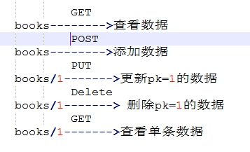
2.6 过滤信息(filtering，或称查询参数)
如果记录数量很多，服务器不可能都将它们返回给用户。API应该提供参数，过滤返回结果。
下面是一些常见的参数。
?limit=10：指定返回记录的数量
?offset=10：指定返回记录的开始位置。
?page=2&per_page=100：指定第几页，以及每页的记录数。
?sortby=name&order=asc：指定返回结果按照哪个属性排序，以及排序顺序。
?animal_type_id=1：指定筛选条件参数的设计允许存在冗余，即允许API路径和URL参数偶尔有重复。比如，GET /zoo/ID/animals 与 GET /animals?zoo_id=ID 的含义是相同的。
常见的情况是，资源需要多级分类，因此很容易写出多级的 URL，比如获取某个作者的某一类文章。
GET /authors/12/categories/2这种 URL 不利于扩展，语义也不明确，往往要想一会，才能明白含义。
更好的做法是，除了第一级，其他级别都用查询字符串表达。
GET /authors/12?categories=2
下面是另一个例子，查询已发布的文章。你可能会设计成下面的 URL。
GET /articles/published
查询字符串的写法明显更好
GET /articles?published=true
2.7 状态码
2.7.1 状态码必须精确
客户端的每一次请求，服务器都必须给出回应。回应包括 HTTP 状态码和数据两部分。
HTTP 状态码就是一个三位数，分成五个类别。
1xx：相关信息
2xx：操作成功
3xx：重定向
4xx：客户端错误
5xx：服务器错误
这五大类总共包含100多种状态码，覆盖了绝大部分可能遇到的情况。每一种状态码都有标准的（或者约定的）解释，客户端只需查看状态码，就可以判断出发生了什么情况，所以服务器应该返回尽可能精确的状态码。
API 不需要1xx状态码，下面介绍其他四类状态码的精确含义。
2.7.2 2xx状态码
200状态码表示操作成功，但是不同的方法可以返回更精确的状态码。
GET: 200 OK
POST: 201 Created
PUT: 200 OK
PATCH: 200 OK
DELETE: 204 No Content
上面代码中，POST返回201状态码，表示生成了新的资源；DELETE返回204状态码，表示资源已经不存在。
此外，202 Accepted状态码表示服务器已经收到请求，但还未进行处理，会在未来再处理，通常用于异步操作。下面是一个例子。
HTTP/1.1 202 Accepted
{
"task": {
"href": "/api/company/job-management/jobs/2130040",
"id": "2130040"
}
}
2.7.3 3xx状态码
API 用不到301状态码（永久重定向）和302状态码（暂时重定向，307也是这个含义），因为它们可以由应用级别返回，浏览器会直接跳转，API 级别可以不考虑这两种情况。
API 用到的3xx状态码，主要是303 See Other，表示参考另一个 URL。它与302和307的含义一样，也是"暂时重定向"，区别在于302和307用于GET请求，而303用于POST、PUT和DELETE请求。收到303以后，浏览器不会自动跳转，而会让用户自己决定下一步怎么办。下面是一个例子。
HTTP/1.1 303 See Other
Location: /api/orders/12345
2.7.4 4xx状态码
4xx状态码表示客户端错误，主要有下面几种。
400 Bad Request：服务器不理解客户端的请求，未做任何处理。
401 Unauthorized：用户未提供身份验证凭据，或者没有通过身份验证。
403 Forbidden：用户通过了身份验证，但是不具有访问资源所需的权限。
404 Not Found：所请求的资源不存在，或不可用。
405 Method Not Allowed：用户已经通过身份验证，但是所用的 HTTP 方法不在他的权限之内。
410 Gone：所请求的资源已从这个地址转移，不再可用。
415 Unsupported Media Type：客户端要求的返回格式不支持。比如，API 只能返回 JSON 格式，但是客户端要求返回 XML 格式。
422 Unprocessable Entity ：客户端上传的附件无法处理，导致请求失败。
429 Too Many Requests：客户端的请求次数超过限额。
2.7.5 5xx状态码
5xx状态码表示服务端错误。一般来说，API 不会向用户透露服务器的详细信息，所以只要两个状态码就够了。
500 Internal Server Error：客户端请求有效，服务器处理时发生了意外。
503 Service Unavailable：服务器无法处理请求，一般用于网站维护状态。
总结一下常用状态码及对应的描述
200 OK - [GET]：服务器成功返回用户请求的数据，该操作是幂等的（Idempotent）。
201 CREATED - [POST/PUT/PATCH]：用户新建或修改数据成功。
202 Accepted - [*]：表示一个请求已经进入后台排队（异步任务）
204 NO CONTENT - [DELETE]：用户删除数据成功。301 状态码（永久重定向）302 状态码（暂时重定向，307也是这个含义）
400 INVALID REQUEST - [POST/PUT/PATCH]：用户发出的请求有错误，服务器没有进行新建或修改数据的操作，该操作是幂等的。
401 Unauthorized - [*]：表示用户没有权限（令牌、用户名、密码错误）。
403 Forbidden - [*] 表示用户得到授权（与401错误相对），但是访问是被禁止的。
404 NOT FOUND - [*]：用户发出的请求针对的是不存在的记录，服务器没有进行操作，该操作是幂等的。
406 Not Acceptable - [GET]：用户请求的格式不可得（比如用户请求JSON格式，但是只有XML格式）。
410 Gone -[GET]：用户请求的资源被永久删除，且不会再得到的。
422 Unprocesable entity - [POST/PUT/PATCH] 当创建一个对象时，发生一个验证错误。
500 INTERNAL SERVER ERROR - [*]：服务器发生错误，用户将无法判断发出的请求是否成功。
更多看这里：http://www.w3.org/Protocols/rfc2616/rfc2616-sec10.html
2.8 服务器响应
2.8.1 响应数据格式
API 返回的数据格式，不应该是纯文本，而应该是一个 JSON 对象，因为这样才能返回标准的结构化数据。所以，服务器回应的 HTTP 头的Content-Type属性要设为application/json。
客户端请求时，也要明确告诉服务器，可以接受 JSON 格式，即请求的 HTTP 头的ACCEPT属性也要设成application/json。下面是一个例子。
GET /orders/2 HTTP/1.1
Accept: application/json
2.8.2 发生错误时的响应
发生错误时不要响应200状态码，有一种不恰当的做法是，即使发生错误，也返回200状态码，把错误信息放在数据体里面，就像下面这样。
HTTP/1.1 200 OK
Content-Type: application/json
{
"status": "failure",
"data": {
"error": "Expected at least two items in list."
}
}
上面代码中，解析数据体以后，才能得知操作失败。
这张做法实际上取消了状态码，这是完全不可取的。正确的做法是，状态码反映发生的错误，具体的错误信息放在数据体里面返回。下面是一个例子。
HTTP/1.1 400 Bad Request
Content-Type: application/json
{
"error": "Invalid payoad.",
"detail": {
"surname": "This field is required."
}
}
2.8.3 响应结果
针对不同操作，服务器向用户返回的结果应该符合以下规范。
GET /collection：返回资源对象的列表（数组），一般是[{"id":1,"name":"a",},{"id":2,name:"b"},]这种类型
GET /collection/resource：返回单个资源对象， 一般是查看的单条数据 {"id":1,"name":'a'}
POST /collection：返回新生成的资源对象 ， 一般是返回新添加的数据信息， 格式一般是{}
PUT /collection/resource：返回完整的资源对象 一般时返回更新后的数据，{}
PATCH /collection/resource：返回完整的资源对象
DELETE /collection/resource：返回一个空文档 一般返回一个空字符串
例如：
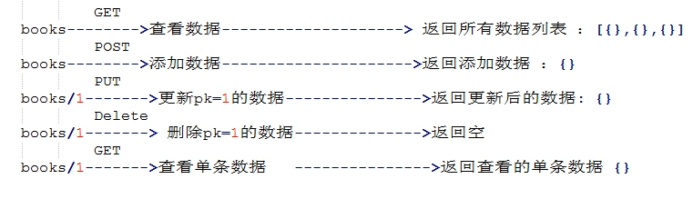
2.9 Hypermedia API，提供链接
RESTful API最好做到Hypermedia，即返回结果中提供链接，API 的使用者未必知道，URL 是怎么设计的。一个解决方法就是，在回应中，给出相关链接，便于下一步操作。这样的话，用户只要记住一个 URL，就可以发现其他的 URL。这种方法叫做 HATEOAS。
举例来说，GitHub 的 API 都在 api.github.com 这个域名。访问它，就可以得到其他 URL。
{
...
"feeds_url": "https://api.github.com/feeds",
"followers_url": "https://api.github.com/user/followers",
"following_url": "https://api.github.com/user/following{/target}",
"gists_url": "https://api.github.com/gists{/gist_id}",
"hub_url": "https://api.github.com/hub",
...
}
上面的回应中，挑一个 URL 访问，又可以得到别的 URL。对于用户来说，不需要记住 URL 设计，只要从 api.github.com 一步步查找就可以了。
HATEOAS 的格式没有统一规定，上面例子中，GitHub 将它们与其他属性放在一起。更好的做法应该是，将相关链接与其他属性分开。
HTTP/1.1 200 OK
Content-Type: application/json
{
"status": "In progress",
"links": {[
{ "rel":"cancel", "method": "delete", "href":"/api/status/12345" } ,
{ "rel":"edit", "method": "put", "href":"/api/status/12345" }
]}
}
再比如：当用户向api.example.com的根目录发出请求，会得到这样一个文档。
{"link": {
"rel": "collection https://www.example.com/zoos",
"href": "https://api.example.com/zoos",
"title": "List of zoos",
"type": "application/vnd.yourformat+json"
}}
上面代码表示，文档中有一个links属性，用户读取这个属性就知道下一步该调用什么API了。rel表示这个API与当前网址的关系（collection关系，并给出该collection的网址），href表示API的路径，title表示API的标题，type表示返回类型。
2.10 其他
（1）API的身份认证应该使用OAuth 2.0框架。
（2）服务器返回的数据格式，应该尽量使用JSON，避免使用XML。
drf是django发展来的一个符合restful接口规范的一个东西，啥东西呢，就是django的一个app，还记得app是啥不。DRF官网地址，但是大家记住一句话，即便是没有这drf，我们照样能做前后端分离的项目，自己做规范的数据接口，返回json数据，都是没问题的昂，那为什么还用drf啊，这个更nb。
在官网中我们看一下这里：
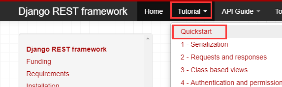
首先下载安装，django是必须要的，不过咱们的django已经下载好了，如果没下载好，那么pip install django，执行一下：
pip install django
pip install djangorestframework //执行这句话，下载drf
# Set up a new project with a single application
django-admin startproject tutorial . # Note the trailing '.' character
cd tutorial
django-admin startapp quickstart
cd ..
好，接下来我们创建一个django项目，models中创建一个表，添加一些数据，然后写一个数据接口来获取一下这些数据，返回json数据类型，按照我们CBV的模式来写，但是下面还没有用到我们的drf昂，只是告诉大家，没有drf，你也能做。
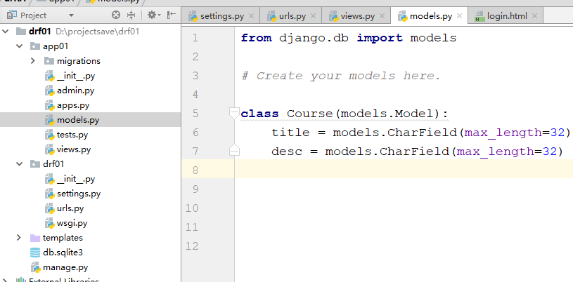
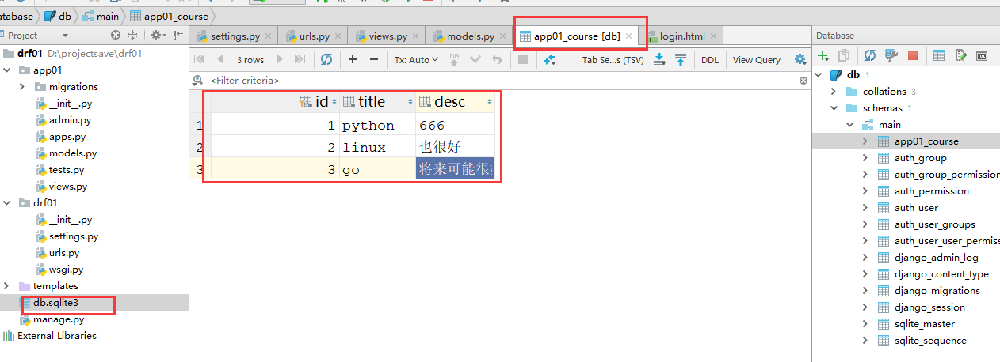
views.py文件内容如下：
from django.shortcuts import render,HttpResponse,redirect
import json
# Create your views here.
from django.views import View
from app01 import models
class CourseView(View):
def get(self,request):
#拿到queryset类型的数据，要加工成[{},{}]这种数据类型
course_obj_list = models.Course.objects.all()
ret = []
for course_obj in course_obj_list:
ret.append({
"title":course_obj.title,
"desc":course_obj.desc,
})
return HttpResponse(json.dumps(ret,ensure_ascii=False)) #ensure_ascii=False是告诉json不要对中文进行编码，不然返回给前端的数据中如果有中文的话会被编码成unicode类型的数据，导致前端看不到中文
urls.py内容如下：
from django.conf.urls import url
from django.contrib import admin
from app01 import views
urlpatterns = [
#url(r'^admin/', admin.site.urls),
url(r'^courses/', views.CourseView.as_view(),name='courses'), #接口就写好啦
]
然后启动项目，在浏览器中一访问，就看到了我们后端返回的json数据：
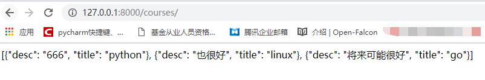
有人就又说了，我们这么写也ok啊，要drf干嘛，上面这个例子是个简单的例子，数据简单、逻辑简单，你这样写当然看着没有问题啦，但是数据量很大，结构很复杂的时候，你这样写的时候就头疼了。
所以上面这个例子你就作为了解吧，我们玩一下drf。
玩DRF之前，我们先说一下我们DRF中有哪些内容：
咱们玩下面10个组件： a.APIView (*****)
b.序列化组件 (*****)
c.试图类(mixin) (*****)
d.认证组件 (*****)
e.权限组件
f.频率组件
g.分页组件
h.解析器组件 (*****)
i.相应其组件
j.url控制器
2.1 APIView组件
在我们的视图中，通过CBV来写视图的时候，继承APIView，url不变，还是上面那个，通过浏览器访问，照样能够看到我们返回的数据，
views.py内容如下：
from django.shortcuts import render,HttpResponse,redirect
import json
from django.views import View
from app01 import models
#引入APIView,APIView是继承的django的View，也就是APIView在View的基础上添加了一些其他的功能
from rest_framework.views import APIView
class CourseView(APIView):
def get(self,request):
course_obj_list = models.Course.objects.all()
ret = []
for course_obj in course_obj_list:
ret.append({
"title":course_obj.title,
"desc":course_obj.desc,
})
return HttpResponse(json.dumps(ret, ensure_ascii=False))
urls.py内容如下：
from django.conf.urls import url
from django.contrib import admin
from app01 import views
urlpatterns = [
url(r'^admin/', admin.site.urls),
url(r'^courses/', views.CourseView.as_view(),name='courses'),
]
页面访问url效果：
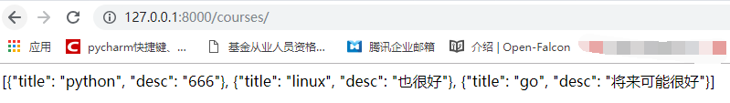
照样拿到了数据，那么怎么回事儿呢，我们看源码，知道一下APIView的流程就行。
2.2 解析器组件
知识准备，还记得一个叫做contentType的http请求头的东西吗？回想一下。
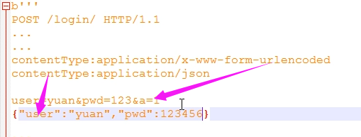
后端根据contentType的类型来找到对应的解析数据的方法来解析数据，提取数据
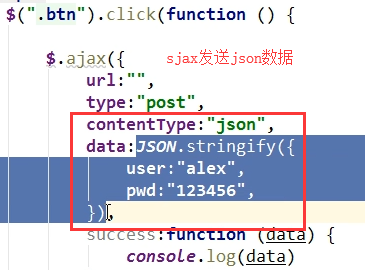
但是django没有内置的自动解开json数据类型的方法，那么只能去request.body里面拿原始的bytes类型的数据，然后自己解，其实很简单，但是django没有，可能是早先没有考虑到。
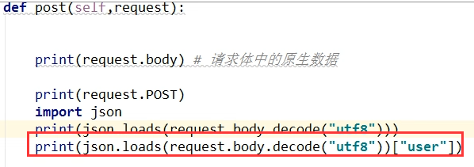
django自动通过contentType来解析数据的那些方法就叫做django的解析器，能解的是urlencode和文件的那个mutipart/form-data类型的数据，然后将数据放到了request.POST方法里面。
def post(self,request):
print(request.POST)
print(type(request)) #通过这个对象的类型(类对象)，找到它的源码看看
return HttpResponse('POST')
而DRF通过自己的解析器，帮我们给request里面封装了一个request.data属性，获取请求体里面的数据，然后解析，并且这个解析器基本上能够解析所有的数据类型，包括django不能自动解析的json数据类型，我们通过Postman(关于Postman工具的使用，看下面那个章节)来调试一下，看看效果
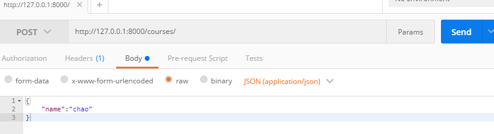
def post(self,request):
print(request.data) #打印结果是：{'name': 'chao'}
return HttpResponse('POST')
我们接着往下看：首先我们给我们的试图类添加一个类变量，这些类变量是用来控制我们视图类里面的各个组件
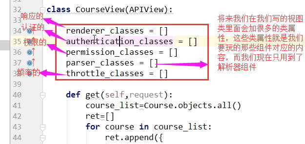
看一下代码：
from django.shortcuts import render,HttpResponse,redirect
import json
from django.views import View
from app01 import models
from rest_framework.views import APIView
#导入解析器
from rest_framework.parsers import JSONParser,FormParser,MulTiPartParser
# JSONParser:解析json数据的额
# FormParser：解析urlencoded数据的
# FileUploadParser：解析文件数据的
class CourseView(APIView):
#写一个类属性，名字必须是parser_classes
parser_classes = [JSONParser,] #里面存放我们上面导入的那几个解析器,如果我们里面写了一个JSONParser，那么解析器只能解析前端发送过来的json数据，存放到request.data里面，可以通过postman测试一下看看效果，为什么？看源码吧
def get(self,request):
course_obj_list = models.Course.objects.all()
ret = []
for course_obj in course_obj_list:
ret.append({
"title":course_obj.title,
"desc":course_obj.desc,
})
return HttpResponse(json.dumps(ret, ensure_ascii=False))
def post(self,request): print('ok') #你会发现，即便是发送的数据类型不对，post方法也走了，但是request.data没有东西，那么肯定是它出了问题
print(request.data) #request.data对我们的数据进行解析的，那么说明data不是一个变量，而是一个属性方法，还记得属性方法吗
return HttpResponse('POST')
源码看着比较复杂，这里我就不列举了，反正你要知道的是，我们的解析器的查找使用顺序是：
自己写的类里面的parser_classes = [JSONParser,]---->然后找settings中的----->然后找默认的，只要找到，就用了。其他的组件也都是这么个顺序，所以其他的咱们就不看了。
Postman是一个模拟发送请求并获得响应结果的工具，不用这个工具的时候，我们写web项目，调试接口返回数据的时候，是不是都要启动项目，通过浏览器访问，然后查看数据啊，有了这个工具我们就可以不用启动浏览器来，通过这个工具就能进行调试，首先下载安装
下载地址：https://www.getpostman.com/downloads/
安装，然后使用，直接看图吧，一看就明白：
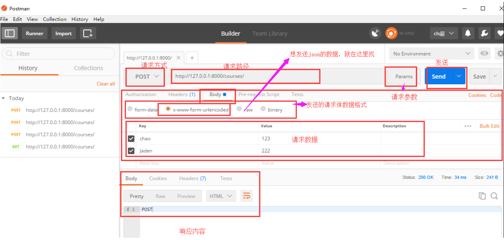
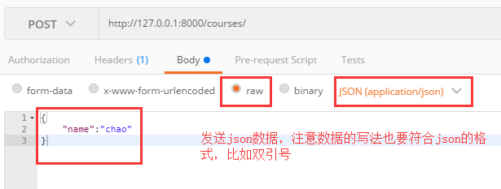